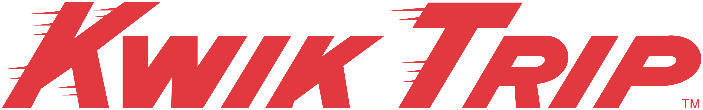

Employment History
Target Distribution Center
Skills and Certifications
Powered Industrial Truck (PIT) Operator
- Stock Picker (SP)
- Reach Truck (RR)
- Forklift (RC)
- Pallet Rider Triple (PRT)
- Tugger (TR)
Inventory Control & Quality
- Audit Trails
- Defect Root Cause Analysis
- Consolidation Reports
- Excel VBA Macros
Warehouse Operations
- Pull
- Put
- Inventory Transport
Emergency Response · American Red Cross
- First Aid
- CPR
- AED
Other Pertinent Information
How the Warehouse Works
At Target, I have worked in the Warehousing department the whole time. The basics of how the Warehouse works are that Inbound receives product, Outbound ships it to the stores, and Warehouse handles everything between. This includes pulling product off of stored pallets, putting pallets in the racking, pulling pallets out of the racking, and transporting pallets and carts of product from various locations to their destinations.
Inventory Control & Quality Assurance
During my time at Target, I was a part of the setup of the Inventory Control and Quality Assurance team. Their primary goal is to look through audit trails when defects (such as errors in counts or product IDs) occurred and find the root cause of the defect in an attempt to develop new processes and/or procedures to prevent the same defects from happening in the future. This meant developing tools that would go through the Inventory Management System history and pull the data in a searchable format. This was done by me and two other colleagues using Excel macros (VBA) to make input fields and query the Database and then format the output in a format that could be used by team members and management to see the history of various things, such as pallet IDs, locations, product IDs (DPCIs), team member IDs, etc.
Emergency Response Team
I am also a part of the Emergency Response Team (ERT). A counterpart of the safety team, the ERT is trained and certified by the American Red Cross in first aid, CPR, and AED use. The team is led by an on-site Registered Nurse who conducts weekly trainings on more advanced first aid topics tailored to Warehouse incidents. We respond to injuries and illness both minor and severe and assess the person and situation. We determine the best course of action, which sometimes means calling Emergency Medical Personnel. If EMT is called, we initiate a Code Green, which stops production, instructs all team members to remove powered equipment from travel aisles and stop operating equipment, and calls all ERT personnel to the site of the incident. This also gives EMT a clear path to the injured team member.
Kwik Trip Inc.

Skills and Job Responsibilities
Employee Management
- Hiring and Firing
- Training
- Coaching
- Performance Management
- Leadership Development
Store Operations
- Day to Day Operations
- Bookkeeping
- Customer Service
- Inventory Management
- Equipment Maintenance
Safety
- Safety Management
- Safety Auditing
- Safety Reporting
Other Pertinent Information
Working My Way Up
At Kwik Star (as it is called in Iowa), I started as a regular team member on third shift. I moved into a Second Shift Leader role fairly quickly and became my Store Leader's unofficial assistant in most matters for the store. When the Assistant Store Leader (ASL) position was made available for our store, I applied for and took that.
Assistant Store Leader
As an ASL, I had the official authority to do many of the things that had been delegated to me previously, and more. I moved to the store across town to prove that I could earn the respect and trust of a completely new team, which I was able to do successfully.
Opening a New Store
When a brand new store opened in Waterloo, I was selected to be the Store Leader for that store. This meant I had to hire and train an entire staff for the store, including the leadership team for the store. I got the store up and running and managed that store for three years.
Why I Moved On
My reason for leaving Kwik Star is that I grew tired of always being on call and working 60+ hours a week, especially on salary. So I opted to find employment with Target Distribution for a regular schedule where I wasn't afraid every time my phone rang that something at work was broken.